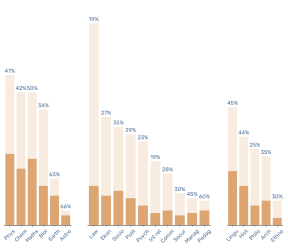
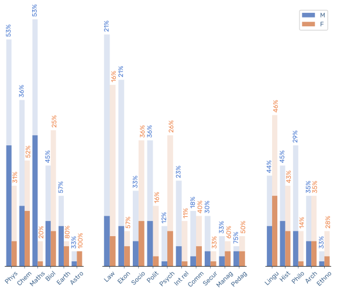
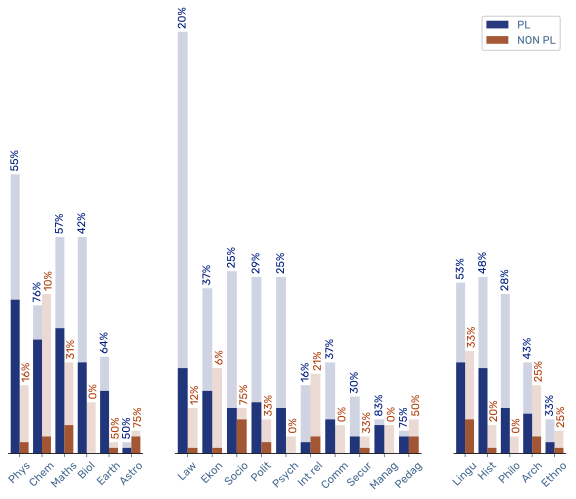
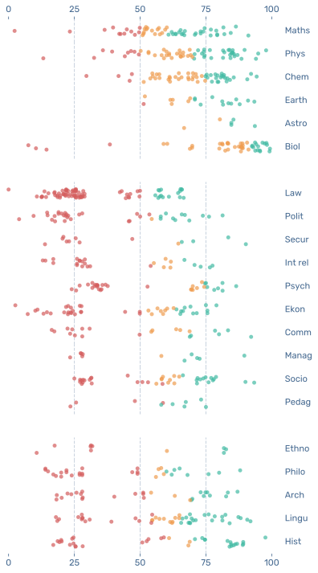
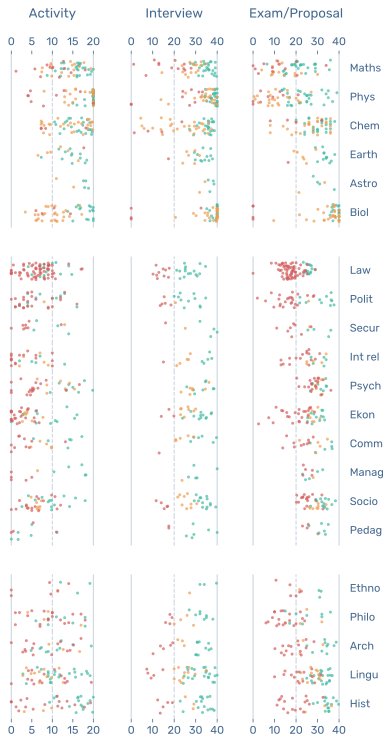
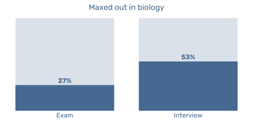
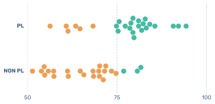
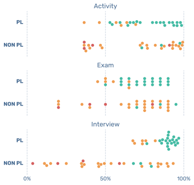

Doctoral school of University of Warsaw
20 October 2025
New academic year has started. With it the Doctoral School of the University of Warsaw has published the results of acceptacne of doctoral candidates. I wanted to understand what is the structure of each doctoral school and of each field. Here are my observations.
First look
First I want to talk shortly about the structure of the doctoral schools. At the University of Warsaw we have 4 doctoral schools [1]. They are:
- Interdisciplinary Doctoral School
- Doctoral School of Humanities (DSH)
- Doctoral School of Social Sciences (DSSS)
- Doctoral School of Exact and Natural Sciences (DSENS)
Each of them take care of few dyscyplines, and each dysciipline has a freedome of accepting or rejecting each candiate. Candidates are however accepted or rejected based on their performance, which differs between schools but more or less its like this:
- Entry exam (DSENS) / Project proposal(SDH & SDSS) ( 40⁄100 points )
- Scientific backgroud ( 20⁄100 points [SDH & SDSS]; 15+5⁄100 points [DSENS])
- Initial interview ( 40⁄100 points )
The data is official and public. Each student's performance is visible, together with the information about the acceptance. The data is published in PDF table and it is not well formated, so the data had to be manually extracted.
Acceptance rate
Lets first take a look at the acceptance rate of each dyscipline.

We can see that the lowest acceptance and the most submissions were into the Law Faculty. Also international relations had the same acceptance rate – around 1/5. Highest acceptance rate on the other hand have disciplines like Earth Sciences, Astronomy and Pedagolical Studies – around 3/5. What is also clearly visible is that the acceptance rate is lower in DSH and DSSS than in DSENS. Maybe it can indicate that many of the natural sciences students have many other opportunities for work, and not so many in humanities and social sciences. But on the other hand DSENS have the most places for PhD students, what probably indicates that those are the most profitable faculties.
Now lets take a look at the acceptance rate splited into sex and ethnicity.
Sex division

It is clearly visible that there are many disciplines where the proportions of men and women are not the same. Most visible examples are physics and mathematics and infomratics, where it is majority of man who was applying and got accepted. Woman however dominate in the psychology department.
It looks like woman and man has on average the same chances to get accepted. Of course there are on average its ok.
Ethnicity division

I was surprised when I saw how not so many foreign students got accepted. It is only international relations where more foreign students got accepted than polish ones. There is actually quite a lot of interesting observations to be made here.
One of the interesting observations is chemistry department. There were more foreign students applying for the possition than Polish ones. But only 10% of foreign students got accepted, while 76% were polsish. We will have a closer look on chemistry later.
Most of the faculties had lower acceptacne rate for foreign students than for Polish ones. Only two faculties accepted more foreign students than Polish ones: astornomy and international relations.
Distribution of points
Now let's take a look at the distribution of points for each dyscipline. First we look at the total points in each dyscypline and doctoral school. In addition the color indicate the status of recommended to admision , reserve list and rejected.

Here are some observations:
- Maths and computer science together with physics have the most spread results
- Bilogy has an anomaly since acceptance threshold was around 90%
- There is a visibly more people in the Social and Humanities Doctoral School around 20-40%, but it is due to the rules[2]
- There is no reserve candidates in the Law Department
We can also examine the paritcular parts of the final points. The plot below shows the distribution split in 3 categories: Activity (0-20), Interview (0-40) and Exam/Proposal (0-40). The color coding is the same as in the previous plot.

Observations:
- The most fair exam was at the Math and Comupter Science together with Physcis faculty
- The worst exam was at the biology, but more about it later
- Most of the candidates maxed out the activity part – they are the most prepared for PhD (?)
- Most of Laywers have less than 50% for the activity – not thiking of a long term plan for PhD
- Humanities have a good spread in all the categories
Anomalies
There is few anomalies I want to point out.
Biology
The exam was too easy (or some students knew the answers before) and the interviews were badly graded. There is a candidate which got max points from the exam and from the interview and yet she was not accepted. The most differenting factor in this case was the activity.

Chemistry
Many international students were just outside of the acceptacne threshold and got rejected.

It get even worse when we look at the individual categories.

Activity and Interviews went quite well for polish and non-polish people, however the exam was too easy for polish candidates. Most of the polish people have more around 90% points from the exam, while non-polish poeple have spread thhrough the whole range.
- Link ↩︎
- In the social sciences and humanities doctoral school you need to first have more than 50% on the project proposal to be invited for the interview. So there are meny people who get less than 20 points from the proposal and from 0 to 20 for activity, leaving us with the 20-40 points range of disqulified people. ↩︎